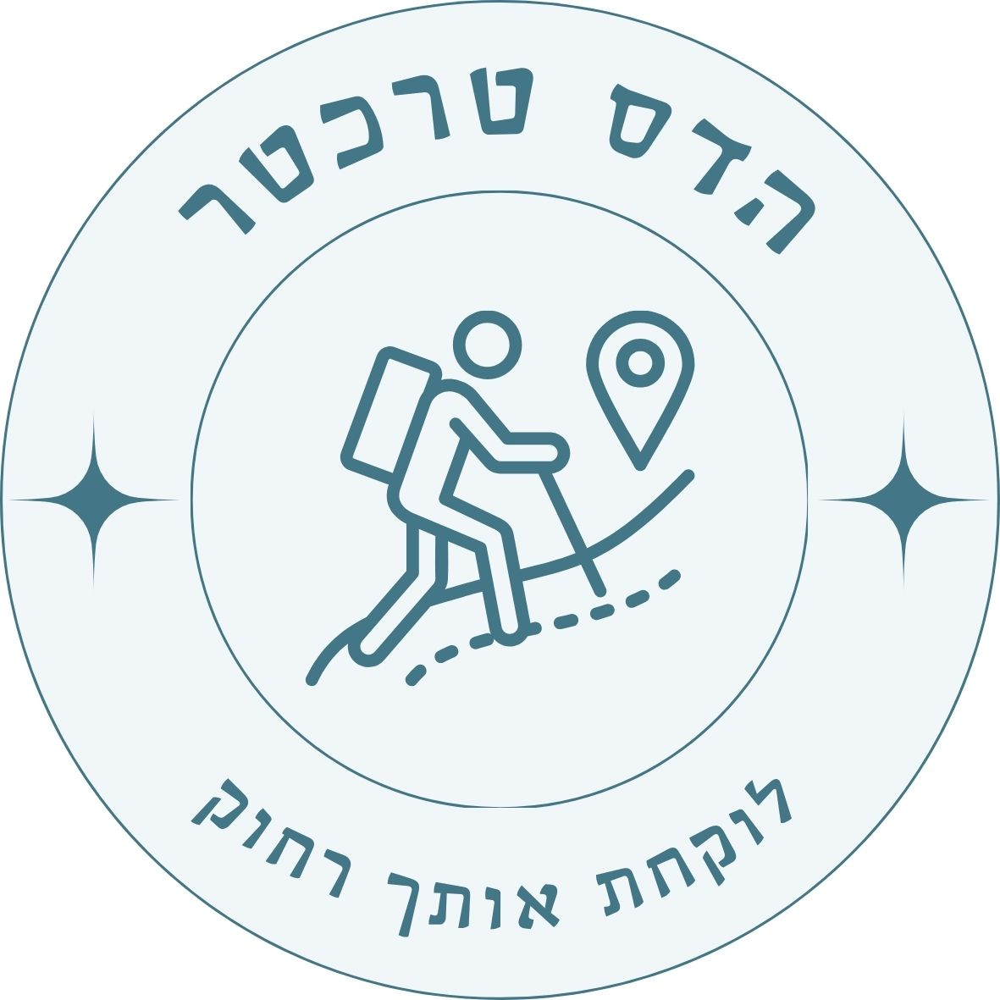

| שם אתר / פעילות | עלות (יורו - סה"כ) | עלות (ש"ח - סה"כ) |
|---|---|---|
| אוטובוס מהשדה לונציה | €108 | ₪378 |
| סיור מעבורת שקיעה | €85.5 | ₪299 |
| סיור בעברית בונציה | €405 | ₪1,417 |
| מוזיאון הגטו היהודי | €162 | ₪567 |
| רכבת הלוך לאגם גארדה | €144 | ₪504 |
| אוטובוס הלוך לסרמיונה | €27 | ₪95 |
| טירת סרמיונה (אופציונלי) | €90 | ₪315 |
| אוטובוס חזור לפסקיירה | €27 | ₪95 |
| רכבת חזור לונציה | €99 | ₪347 |
| סוג כרטיס Vaporetto | עלות לאדם |
|---|---|
| נסיעה בודדת (עד 75 דק') | €9.50 |
| חופשי יומי - 24 שעות | €25.00 |
| חופשי יומיים - 48 שעות | €35.00 |
| חופשי 3 ימים - 72 שעות | €45.00 |
| שם המסעדה | פרטים ומיקום |
|---|---|
| מאפיית גם גם (חלבי) |
כשרות: חב"ד. שעות: 08:00-18:00 ניווט למאפייה |
| מסעדת גם גם (בשרי) |
כשרות: חב"ד. שעות: 12:00-22:00 ניווט למסעדה |
| באגטו (בשרי) |
כשרות: רבנות איטליה גלאט. שעות: 11:30-23:00 ניווט למסעדה |